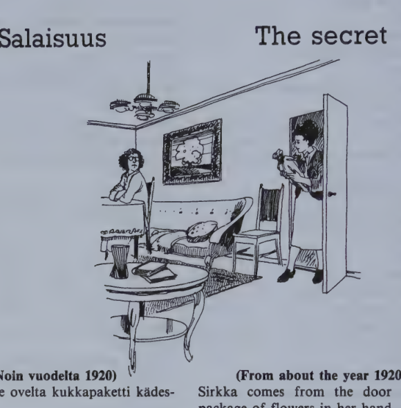
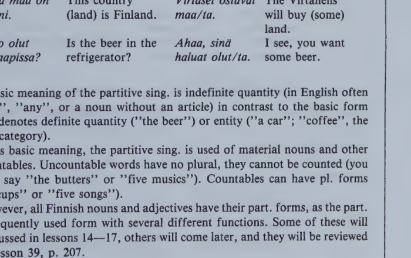

Kappale 13 / Lesson 13#
Salaisuus / The Secret#

(Noin vuodelta 1920)
Sirkka tulee ovelta kukkapaketti kädessä.
Suomi |
English |
|---|---|
1. Äiti. Kenelle nuo kukat ovat? |
1. Mother. Who are those flowers for? |
2. S. Nämä kukat? Ne ovat minulle. |
2. S. These flowers? They are for me. |
3. Ä. Sinulle? Keneltä? Jussiltako taas? |
3. M. For you? From who? From Jussi again? |
4. S. Niin, häneltä … Äiti, mihin minä panen nämä kukat? |
4. S. Yes, from him … Mother, where shall I put these flowers? |
5. Ä. Mihin? Tälle pöydälle. Tai tuolle pöydälle. Tai tuolille. Tai sohvalle. Tai lattialle, jos haluat. Tai ikkunalle. Mihin vain! |
5. M. Where? On this table. Or on that table. Or the chair. Or the sofa. Or the floor if you like. Or on the window sill. Anywhere! |
6. S. Äiti, miksi sinä olet minulle vihainen? Siksikö että nämä kukat ovat Jussilta? (Ottaa kirjat pieneltä pöydältä, panee ne tuolille ja kukat pöydälle.) |
6. S. Mother, why are you angry with me? Because these flowers are from Jussi? (She takes the books off the little table, puts them on a chair, and the flowers on the table.) |
7. Ä. Mihin sinä menet? Tule tänne ja istu. Minä haluan puhua sinun kanssasi. |
7. M. Where are you going? Come here and sit down. I want to talk to you. |
8. S. No, mitä nyt? |
8. S. Well, what is it now? |
9. Ä. Sinä olet joka ilta ulkona Jussin kanssa. |
9. M. You go out every evening with Jussi. |
10. S. Niin olen. Entäs (= entä) sitten? |
10. S. Yes, I do. So what? |
11. Ä. Minä olen sinun äitisi. Minä haluan tietää, mitä te aiotte tehdä. |
11. M. I’m your mother. I want to know what you intend to do. |
12. S. Mutta äiti, se on salaisuus! |
12. S. But mother, it’s a secret! |
13. Ä. Kerro minulle. Kyllä sinä voit kertoa äidille kaikki. |
13. M. Tell me. Why, you can tell everything to your mother. |
14. S. En kerro! Jos minä kerron sinulle, sinä kerrot rouva Lahtiselle ja rouva Lahtinen kertoo rouva Virtaselle ja rouva Virtanen kertoo neiti Laaksolle ja neiti Laakso kertoo kaikille, että minä olen salakihlossa Jussi Lehtisen kanssa! |
14. S. No, I can’t. If I tell you, you’ll tell Mrs. Lahtinen and Mrs. Lahtinen will tell Mrs. Virtanen and Mrs. Virtanen will tell Miss Laakso and Miss Laakso will tell everybody that I am secretly engaged to Jussi Lehtinen! |
Anna minulle anteeksi!
say/tell
Sano “aa”!
Sano (minulle) mikä päivä tänään on!
Kerro (minulle) mitä sinä teet huomenna!
Kysykää Villeltä!
Ville ei vastaa meille.
Kielioppia / Structural notes#
1. The “(on)to” case (allative)#
Word |
Stem |
Finnish |
English |
|---|---|---|---|
pöytä |
(pöydä/n) |
mihin? pöydä/lle |
where(to)? on(to) the table |
uusi pöytä |
(uude/n pöydän) |
uude/lle pöydälle |
on(to) the new table |
ovi |
(ove/n) |
ove/lle |
to the door |
The ending -lle corresponds to the English prepositions “(on)to”, “on(to)”, “to”.
When the gen. stem and the basic form are different, the gen. stem is used.
Note:
Basic expression |
Case form |
|---|---|
mikä pöytä? |
mi/lle pöydä/lle? |
tämä pöytä |
tä/lle pöydä/lle |
se pöytä |
si/lle pöydä/lle |
The “(on)to” case is also used with verbs denoting giving or telling something to someone:#
Finnish |
English |
|---|---|
Minä annan tei/lle kahvia. |
I’ll give you some coffee. |
Kene/lle maksamme kaupassa? |
Who do we pay in the shop (= to whom do we give money)? |
Ostakaa tämä kirja Liisa/lle! |
Buy this book for Liisa! |
Voitteko sanoa minulle … ? |
Can you tell me … ? |
Lapsi vastaa äidi/lle. |
The child answers his mother. |
Note also:
Pane kukat pöydälle/si!
Kerron ystävälle/ni, että …
As always, the poss. suffix follows after the case ending.
2. The “from” case (ablative)#
Word |
Stem |
Finnish |
English |
|---|---|---|---|
pöytä |
(pöydä/n) |
mistä? pöydä/ltä |
where from? from, off the table |
pieni pöytä |
(piene/n pöydän) |
piene/ltä pöydältä |
from the small table |
ovi |
(ove/n) |
ove/lta |
from the door |
The case ending -lta (-ltä) roughly corresponds to the English prepositions “from”, “off” (that is, away from somewhere or something).
When the gen. stem and the basic form are different, the gen. stem is used.
Note:
Basic expression |
Case form |
|---|---|
mikä pöytä? |
mi/ltä pöydä/ltä? |
tämä pöytä |
tä/ltä pöydä/ltä |
se pöytä |
si/ltä pöydä/ltä |
This case is also used with verbs which denote taking or getting something from someone:
Finnish |
English |
|---|---|
Tyttö saa rahaa äidi/ltä. |
The girl gets money from her mother. |
Kene/ltä nämä kukat ovat? |
Who are these flowers from? |
In Finnish, people also ask questions “from” someone:
Kysy Liisa/lta, mitä hän tekee huomenna.
Ask Liisa what she’s going to do tomorrow.
Note also:
Nämä kukat ovat poikaystävältä/ni.
These flowers are from my boyfriend.
Kysykää opettajalta/nne, miksi …
Ask your teacher why …
The poss. suffix always follows after the case ending.
Sanasto / Vocabulary#
Finnish |
English |
|---|---|
+aiko/a (cp. aikomus intention) |
to intend, be going to |
aio/n-t aikoo aio/mme-tte aikovat |
|
ikkuna-n |
window |
+ilta illan |
evening |
joka (indecl. indef. pron.) |
every |
jos |
if |
kanssa |
with, in the company of |
Jussi/n kanssa |
with Jussi |
minu/n kanssa/ni |
with me |
+kerto/a (cp. kertomus story) |
to tell, relate, narrate |
kerron/-t kertoo kerro/mme-tte kertovat |
|
kihlossa |
engaged to be married |
+kukka kukan |
flower, blossom, bloom |
käsi käden |
hand |
lattia-n |
floor |
mihin? |
where to? |
mihin vain |
anywhere, no matter where (to) |
missä vain |
anywhere, no matter where |
mikä vain |
anything, no matter what |
milloin vain |
anytime, no matter when |
noin (abbr. n.) |
about, approximately; so, like that |
+paketti paketin |
parcel, package, packet |
pan/na (pane/n-n-t-e-mme-tte-vat) |
to put, place |
+pöytä pöydän |
table |
salaisuus salaisuuden |
secret |
siksi (cp. miksi?) |
therefore, for that reason |
siksi että (= koska) |
for the reason that, because |
taas |
again; on the other hand |
ulkona (# sisällä) |
outside, out of doors |
vihainen vihaisen |
angry, cross |
vuosi vuoden |
year |
+äiti äidin |
mother, mommy |
*
Finnish |
English |
|---|---|
+anta/a |
to give; to let, allow |
anna/n-t antaa anna/mme-tte antavat |
|
mistä? |
where from? from where? |
Kappale 14 / Lesson 14#
Ravintolassa on hyvää kalaa / There’s good fish at the restaurant#
Ilta helsinkiläisessä ravintolassa. James Brown syö tavallisesti täällä.
Suomi |
English |
|---|---|
1. B. Hyvää iltaa, neiti. Onko tämä pöytä vapaa? |
1. B. Good evening. Is this table free? |
2. Tarjoilija. On kyllä. Ruokalista, olkaa hyvä. |
2. Waitress. Yes, it is. Here’s the menu, sir. |
3. B. Kiitos. - Ensin tomaattikeittoa. Sitten lihaa tai kalaa. Onko teillä tänään hyvää kalaa? |
3. B. Thank you. - First tomato soup. Then meat or fish. Do you have good fish today? |
4. T. Meillä on oikein hyvää paistettua kalaa. |
4. W. We have very good fried fish. |
5. B. Hyvä on, minä otan sitä. Sitten leipää ja voita. Ja maitoa? |
5. B. Good, I’ll take that (“some of it”). Then bread and butter. And milk. |
6. T. Iso vai pieni lasi? |
6. W. A large glass or small? |
7. B. Iso. Ei, hetkinen … Mitä olutta teillä on? |
7. B. Large, please. No, just a moment … What beer do you have? |
8. T. Meillä on “Hippiä” ja “Hoppia”. |
8. W. We have “Hippi” and “Hoppi”. |
9. B. Pullo olutta sitten, minä otan Hoppia. Saanko myös kylmää vettä? |
9. B. A bottle of beer, then; I’ll take Hoppi. May I have some cold water, too? |
10. T. Tuon kyllä. |
10. W. Yes, I’ll bring you some. |
11. B. Sitten jälkiruokaa. Jäätelöä ja pieni kuppi kahvia. |
11. B. Then the dessert. Ice-cream and a small cup of coffee. |
12. B. Neiti, lasku! (Maksaa.) Hyvää yötä! (James lähtee.) |
12. B. Waitress, the check, please! (He pays.) Good night! (James leaves.) |

Mitä ruokaa te otatte?
Matti. Minä otan tätä (= some of this).
Jussi. Minä otan tuota (= some of that).
Pekka. Minä otan myös sitä (= some of it).
Liisa. Minä en ota mitään.
Haluatko kahvia? Ei kiitos.
Otatko teetä? (Kyllä) kiitos.
Saanko kylmää vettä?
Ole hyvä/Olkaa hyvä (said when you give something to someone)!
öy-yö-uo yöpöytä, työpöytä, tuo pöytä, ruokapöytä
syökää ja juokaa, pöydällä on ruokaa!
Kielioppia / Structural notes#
1. Partitive singular#
Basic form |
English |
Partitive |
English |
|---|---|---|---|
Onko sinulla auto? |
Do you have a car? |
Onko sinulla raha/a? |
Do you have money? |
Kahvi on kuuma juoma. |
Coffee is a hot beverage. |
Saanko kahvi/a? |
May I have some coffee please? |
Tämä maa on Suomi. |
This country (land) is Finland. |
Virtaset ostavat maa/ta. |
The Virtanens will buy (some) land. |
Onko olut jääkaapissa? |
Is the beer in the refrigerator? |
Ahaa, sinä haluat olut/ta. |
I see, you want some beer. |
The basic meaning of the partitive sing. is indefinite quantity (in English often “some”, “any”, or a noun without an article) in contrast to the basic form which denotes definite quantity (“the beer”) or entity (“a car”; “coffee”, the whole category).
In its basic meaning, the partitive sing. is used of material nouns and other uncountables. Uncountable words have no plural, they cannot be counted (you cannot say “the butters” or “five musics”). Countables can have pl. forms (“the cups” or “five songs”).
However, all Finnish nouns and adjectives have their part. forms, as the part. is a frequently used form with several different functions. Some of these will be discussed in lessons 14-17, others will come later, and they will be reviewed after lesson 39, p. 207.
Structure#
The ending is
-a (-ä) after one vowel: kahvi/a, leipä/ä
-ta (-tä) after two vowels or a consonant: maa/ta, olut/ta
The stem may differ from the basic form if the word ends in -i, -e, or a consonant. Otherwise the part. sing. ending can be added directly to the basic form.
From now on, the part. sing. of each new noun will be included in the vocabulary and should be memorized along with the basic form and the gen. sing. (The irregular part. sing. forms of the nouns covered up to now are listed on p. 70. The part. sing. forms of the nouns in lessons 1-21 can be looked up in a list arranged by inflection types on p. 99.)
Note. The following word types have part. sing. stems which differ from the basic form:
Type |
Example |
|---|---|
i-e words |
onni (onnen) onne/a; pieni (pienen) pien/tä; vesi (veden) vet/tä |
huone words |
huone (huoneen) huonet/ta |
nainen words |
nainen (naisen) nais/ta |
salaisuus words |
salaisuus (salaisuuden) salaisuut/ta |
As usual, adjectives and pronouns agree with the noun:
Finnish |
English |
|---|---|
Millais/ta kahvi/a haluat? |
What kind of coffee do you want? |
Hyv/ää, kuuma/a kahvi/a. |
Good hot coffee. |
Onko teillä minulle helppo/a työ/tä? |
Do you have some easy work for me? |
Note also:
Basic expression |
Partitive |
|---|---|
mikä leipä? |
mi/tä leip/ää? |
tämä leipä |
tä/tä leip/ää |
tuo leipä |
tuo/ta leip/ää (colloq. to/ta) |
se leipä |
si/tä leip/ää |
Possessive suffixes, as always, come after the partitive ending:
Haluatko suklaata/ni?
Do you want some of my chocolate?
Pöydällä on sinun rahaa/si.
Some of your money is on the table.
Important to remember:
The partitive is not used as the subject of the sentence (except in “there is” sentences, 17:1).
KAHVI#
Bad mistake: Kahvia maksaa paljon.
(The part. pl. will be explained in 21:1.)
2. Special uses of partitive#
The partitive is used after words indicating measure or quantity:
Finnish |
English |
|---|---|
lasi vet/tä |
a glass of water |
iso kuppi kahvi/a |
a large cup of coffee |
vähän musiikki/a |
a little music |
paljon työ/tä |
a lot of work |
The partitive is used in greetings, wishes, and exclamations:
Finnish |
English |
|---|---|
Hyv/ää yö/tä! |
Good night! |
Hauska/a ilta/a! |
Have a nice evening! |
Ihana/a! |
How wonderful! |
Sanasto / Vocabulary#
Finnish |
English |
|---|---|
ensin |
(at) first |
juo/da (juo/n-t juo juo/mme-tte-vät) |
to drink |
+jälki/ruoka-a-ruoan or -ruuan (always pronounced ruuan) |
dessert (“after-food”) |
jäätelö-ä-n (cp. jää ice) |
icecream |
kala-a-n |
fish |
+keitto keiton |
soup |
lasku-a laskun |
check, bill |
+leipä-ä leivän |
bread, loaf |
liha-a-n |
meat; flesh |
+lähte/ä |
to leave, depart, go |
lähde/n-t lähtee lähde/mme-tte lähtevät |
|
+maito-a maidon |
milk |
olut-ta oluen |
beer |
+paistettu-a paistetun |
fried, roasted |
pullo-a-n |
bottle |
ravintola-a-n |
restaurant |
ruoka/lista-a-n |
menu (“food-list”) |
syö/dä (syö/n-t syö syö/mme-tte-vät) |
to eat |
tarjoilija-a-n (from tarjoilla to serve, wait) |
waiter, waitress |
tavallisesti |
usually, ordinarily |
+tomaatti-a tomaatin |
tomato |
tuo/da (tuo/n-t tuo tuo/mme-tte-vat) (# viedä) |
to bring; to import |
vapaa-ta-n |
free; vacant |
vesi vettä veden |
water |
voi-ta-n |
butter |
yö-tä-n |
night |
*
Finnish |
English |
|---|---|
ihana-a-n |
wonderful, lovely |
+salaatti-a salaatin |
salad; lettuce |
Irregular part. sing. forms of nouns in lessons 1-13#
i-e words#
Basic |
Partitive |
Genitive |
Lesson |
|---|---|---|---|
+kaikki |
kaikkea |
kaiken |
4 |
kivi |
kiveä |
kiven |
1 |
nimi |
nimeä |
nimen |
5 |
onni |
onnea |
onnen |
9 |
ovi |
ovea |
oven |
8 |
Suomi |
Suomea |
Suomen |
1 |
kieli |
kieltä |
kielen |
3 |
nuori |
nuorta |
nuoren |
2 |
pieni |
pientä |
pienen |
2 |
lapsi |
lasta |
lapsen |
12 |
käsi |
kättä |
käden |
13 |
uusi |
uutta |
uuden |
2 |
vuosi |
vuotta |
vuoden |
13 |
huone words#
Basic |
Partitive |
Genitive |
|---|---|---|
huone |
huonetta |
huoneen |
kappale |
kappaletta |
kappaleen |
+liike |
liikettä |
liikkeen |
+osoite |
osoitetta |
osoitteen |
perhe |
perhettä |
perheen |
terve |
tervettä |
terveen |
Exception: +nukke |
nukkea |
nuken |
nainen words#
Basic |
Partitive |
Genitive |
Lesson |
|---|---|---|---|
nainen |
naista |
naisen |
1 |
hetkinen |
hetkistä |
hetkisen |
9 |
ihminen |
ihmistä |
ihmisen |
10 |
millainen |
millaista |
millaisen |
2 |
onnellinen |
onnellista |
onnellisen |
12 |
suomalainen |
suomalaista |
suomalaisen |
3 |
vihainen |
vihaista |
vihaisen |
13 |
salaisuus words#
Basic |
Partitive |
Genitive |
Lesson |
|---|---|---|---|
salaisuus |
salaisuutta |
salaisuuden |
13 |
Pronouns#
Basic |
Partitive |
Genitive |
Lesson |
|---|---|---|---|
minä |
minua |
minun |
3 |
sinä |
sinua |
sinun |
3 |
me |
meitä |
meidän |
9 |
te |
teitä |
teidän |
4 |
he |
heitä |
heidän |
9 |
tämä |
tätä |
tämän (pl. nämä) |
1 |
se |
sitä |
sen (pl. ne) |
1 |
mikä |
mitä |
minkä (pl. mitkä) |
1 |
kuka |
ketä |
kenen (pl. ketkä) |
1 |
joka |
jota |
jonka (pl. jotka) |
12 |
Numerals#
Basic |
Partitive |
Genitive |
Lesson |
|---|---|---|---|
yksi |
yhtä |
yhden |
7 |
kaksi |
kahta |
kahden |
7 |
kolme |
kolme-a |
kolmen |
7 |
viisi |
viittä |
viiden |
7 |
kuusi |
kuutta |
kuuden |
7 |
seitsemän |
seitsemää |
seitsemän |
7 |
kahdeksan |
kahdeksaa |
kahdeksan |
7 |
yhdeksän |
yhdeksää |
yhdeksän |
7 |
kymmenen |
kymmentä |
kymmenen |
7 |
yksi/toista |
yhtä/toista |
yhden/toista |
7 |
kaksi/kymmentä |
kahta/kymmentä |
kahden/kymmenen |
7 |